먼저 꼭 읽어 주세요
- 공유받은 단축어 링크로는 자동으로 켜지고 꺼지지 않아요. 차에 탈 때 켜지게 하려면 자동화를 이 iPhone에서 직접 만들어야 해요. 대부분은 ‘차에 연결될 때 → 감시 시작’ 하나만 만들면 돼요. 앱 안의 1분 안내를 따라 해도 돼요.
- RoadSentry 동작은 따로 받을 필요가 없어요. 앱을 설치하면 단축어 앱에 ‘감시 시작’과 ‘감시 정지’가 이미 들어 있어요. 자동화를 만들 때 이걸 직접 고르는 게 가장 확실해요.
- 단축어가 실행돼도 앱 화면은 열리지 않아요. 뒤에서 조용히 감시를 켜요. 켜졌는지는 3. 잘 되는지 확인에서 보는 법을 알려 드려요.
단축어
무엇을 할지
예) RoadSentry ‘감시 시작’
링크로 공유돼요
자동화
언제 실행할지
예) 내 차 블루투스에 연결될 때
공유가 안 돼요
자동으로 켜지려면 ‘언제’(자동화)가 꼭 있어야 해요. 그래서 이 iPhone에서 직접 만들어야 해요.
1처음 시작하기
설치하고 권한을 허용하는 단계예요. 한 번만 하면 돼요.
-
App Store에서 ‘RoadSentry’를 설치해요
무료예요. 회원 가입이나 로그인은 없어요.
-
약관 두 칸을 체크하고 ‘동의하고 계속’
첫 화면에서 다음을 누르면 위치서비스 이용약관이 나와요.
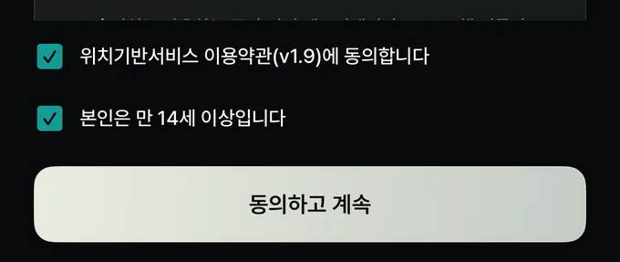
① 두 칸 체크 · ② 동의하고 계속RoadSentry 1.0.6 실제 화면 그다음 다음을 한 번 누르고 마지막 화면에서 시작하기를 눌러요.
-
위치 권한 창에서 ‘앱을 사용하는 동안 허용’
‘시작하기’를 누르면 바로 감시가 켜지면서 위치 권한 창이 떠요.
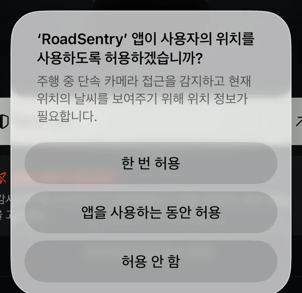
‘한 번 허용’은 고르지 마세요RoadSentry 1.0.4 실제 화면 -
이어서 뜨는 창에서 ‘항상 허용으로 변경’
화면이 꺼져 있어도 안내를 받으려면 꼭 필요해요.
RoadSentry 1.0.4 실제 화면 -
알림은 원하면 ‘허용’ (선택)
폰 음량이 낮을 때, 월간 리포트·주간 요약이 나왔을 때 알려 줘요. 안 해도 안내 음성은 나와요.
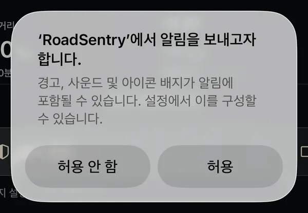
RoadSentry 1.0.4 실제 화면 -
‘감시 종료’ 버튼이 보이면 켜진 거예요
버튼 글자가 ‘감시 종료’면 지금 감시 중이에요. ‘감시 시작’일 때만 눌러 주세요. 권한 창이 뜨지 않았다면 주행 탭의 감시 시작을 눌러 주세요.
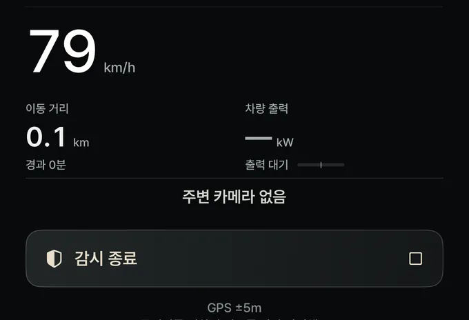
① 버튼을 누르면 감시가 끝나요RoadSentry 1.0.6 실제 화면

차량 등록·자동 시작·소리 설정은 나중에 해도 돼요. 필요할 때 홈과 설정에서 안내해 드려요.
2자동 시작 설정
대부분은 ① 하나만 만들면 돼요. 차에 타면 저절로 켜지게 하는 자동화예요. iPhone 기본 앱인 단축어 앱에서 만들어요.
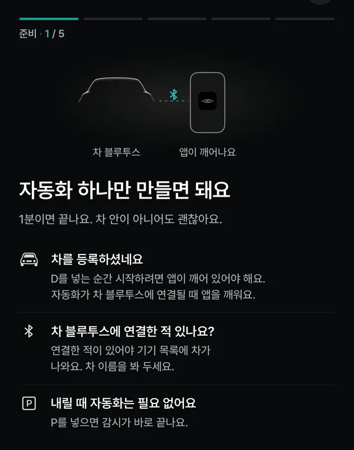
차에 연결될 때 → 감시 시작필수
이것 하나면 자동 시작이 돼요. 이 자동화에는 다른 동작을 넣지 마세요.
차에서 연결 해제될 때 → 감시 정지권장
내리면 감시를 바로 끝내요. 차량 등록을 했다면 P에서 바로 끝나니 없어도 돼요.
안내를 폰 스피커로 듣기선택
①과 따로 만들어요. 없으면 안내는 차 스피커로 나와요. ③을 만들면 ②는 필수예요.
① 차에 연결될 때 → 감시 시작
-
단축어 앱을 열고 오른쪽 위 ＋를 눌러요
새 단축어 화면이 열려요. 아래 ‘검색’ 칸을 눌러요.
-
‘blue’를 입력하고 ‘자동화’ 아래 ‘Bluetooth’ → ‘＋ 추가’
위쪽 ‘Bluetooth 설정’이 아니라 ‘자동화’ 제목 아래의 Bluetooth를 눌러요. 설명 창이 뜨면 ＋ 추가를 눌러요.
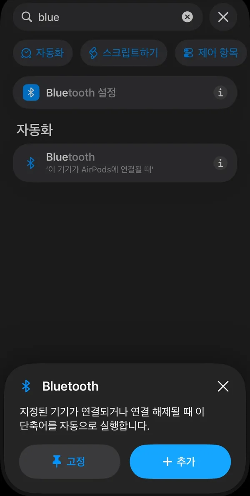
① ‘자동화’ 아래 ‘Bluetooth’ → ② ‘＋ 추가’iPhone 단축어 앱 실제 화면 (iOS 26) -
‘기기 중 아무거나’를 눌러 내 차를 골라요
‘기기 중 아무거나 이(가) 연결 될 때’가 들어가요. ‘기기 중 아무거나’를 누르고, 목록에서 내 차 이름에 체크한 뒤 오른쪽 위 ✓를 눌러요. 차 화면의 블루투스 메뉴에 보이는 이름과 같은 걸 고르세요. 이어폰 같은 다른 기기를 고르면 차에 타도 실행되지 않아요.
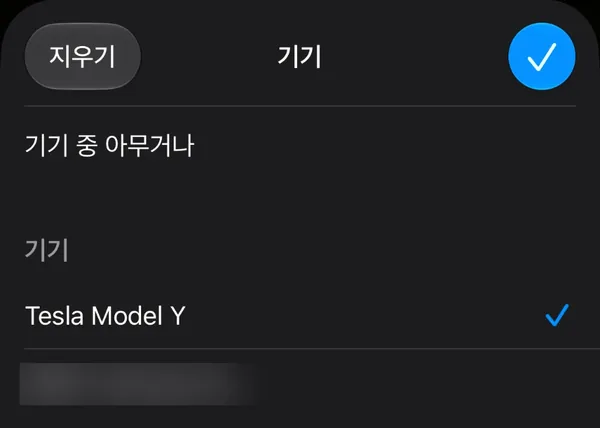
① 내 차 이름에 체크 → ② 오른쪽 위 ✓iPhone 단축어 앱 실제 화면 (iOS 26) -
‘실행 전에 확인’을 꺼요
‘내 차 이(가) 연결 될 때’ 끝의 동그란 화살표를 누르면 아래에 ‘자동화’와 ‘실행 전에 확인’이 나와요. ‘자동화’는 켜 둔 채로, ‘실행 전에 확인’은 꺼요. ‘연결’은 그대로 둬요.
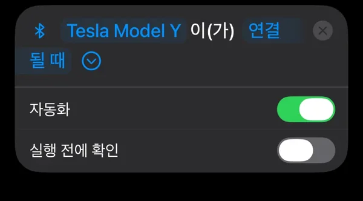
① 화살표를 눌러 펼치기 → ② ‘실행 전에 확인’ 끄기iPhone 단축어 앱 실제 화면 (iOS 26) -
아래 ‘검색’에 RoadSentry를 입력하고 ‘감시 시작’을 눌러요
RoadSentry 동작이 나오면 ‘감시 시작’ 하나만 넣어요. 다른 동작은 넣지 마세요. 다 되면 왼쪽 위 ‹를 눌러 나와요.
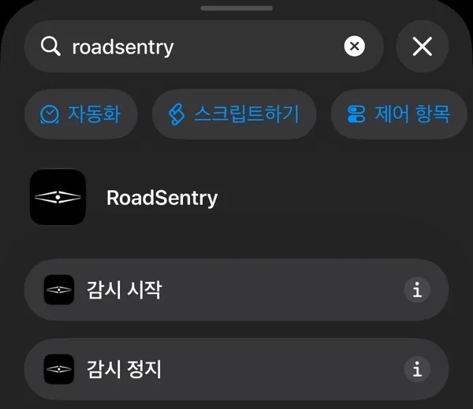
① ‘RoadSentry’ 입력 → ② ‘감시 시작’iPhone 단축어 앱 실제 화면 (iOS 26)
② 차에서 연결 해제될 때 → 감시 정지 권장
내릴 때 감시를 바로 끝내요. 없어도 감시는 저절로 끝나요.
- 차량 등록을 했다면 기어를 P에 두면 바로 끝나서 ②가 없어도 돼요.
- 그래도 만들어 두면 좋은 이유: 차량 등록을 하면 P로 감시가 끝난 뒤에도 약 3시간 동안 GPS로 다시 출발하는지 지켜봐요. ②가 있으면 내려서 블루투스가 끊기는 순간 이 확인을 확실히 끝내서 배터리를 아끼고, 그사이 택시·버스 같은 다른 차를 탔을 때 잘못 켜지는 일도 막아 줘요.
- 차량 등록을 안 했다면 ②가 없을 때 차를 세운 뒤 약 5분 지나야 끝나요(차 블루투스가 연결된 채 차 안에 있으면 최대 30분). 만들어 두면 좋아요.
- ③을 만들었다면 ②는 꼭 만들어요.
-
①처럼 Bluetooth 자동화를 하나 더 만들어요
내 차를 고른 뒤 ‘연결’을 눌러 ‘연결 해제’로 바꿔요. ‘실행 전에 확인’은 ①처럼 꺼요. (‘자동화’ 탭에서 만들 때는 ‘연결 해제될 때’와 ‘즉시 실행’에 체크해요.)
-
RoadSentry → ‘감시 정지’
① ‘RoadSentry’ 입력 → ② ‘감시 정지’iPhone 단축어 앱 실제 화면 (iOS 26) ‘감시 정지’는 앱의 ‘감시 종료’와 같아요. 이것 하나만 넣어요.
③ 안내를 폰 스피커로 듣기 선택
차 스피커 대신 iPhone 스피커로 안내를 듣고 싶을 때만 만들어요. ①에 넣지 말고 새 자동화로 만들어요. 차 음악 연결이 조금 늦게 붙어 소리를 다시 가져가기 때문이에요.
-
①의 1~4단계와 똑같이 만들어요
Bluetooth → 내 차 → 연결 될 때 → ‘실행 전에 확인’ 끄기. 그다음 ‘감시 시작’ 대신 아래 동작을 넣어요. (‘자동화’ 탭에서 만들 때는 ‘즉시 실행’ → ‘다음’ → ‘새로운 빈 자동화’를 골라요.)
-
동작을 이 순서대로 넣어요
대기 8초 → 재생 대상 iPhone → 대기 3초 → 재생 대상 iPhone → 음량 설정
동작 검색에서 ‘대기’, ‘재생 대상’, ‘음량’을 찾으면 나와요. iOS 버전에 따라 ‘재생 대상 설정’ 또는 ‘재생 대상 변경’으로 보여요.
- 대기 8초
- 재생 대상 iPhone
- 대기 3초
- 재생 대상 iPhone
- 음량 설정 원하는 크기
재현 그림 · 위에서 아래로 이 순서대로 넣어요
3잘 되는지 확인하기
자동화를 만든 뒤 한 번 차에 타 보고, 앱에서 실행 기록을 확인해요.
-
RoadSentry → 설정 → 알림 → 맨 아래 ‘자동 시작’
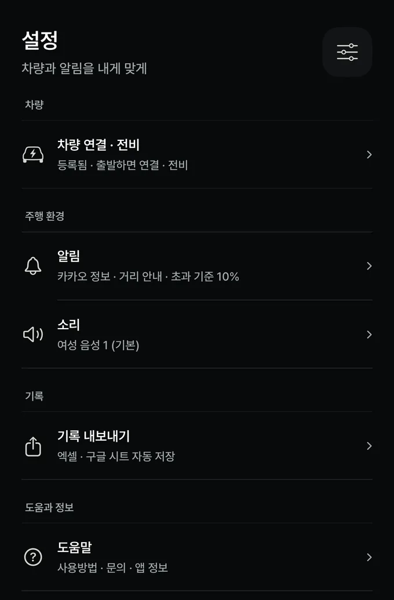
① 알림RoadSentry 1.0.6 실제 화면 -
‘차에 타면 자동 시작’ 카드에 ‘정상’이 보이면 돼요
카드 아래에 ‘감시 시작’ 단축어 최근 실행: 오늘 08:31처럼 차에 탄 시각이 보이면 ①이 잘 실행된 거예요.
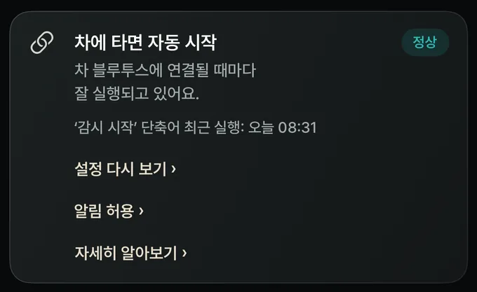
① 정상 · ② 최근 실행 시각RoadSentry 1.0.6 실제 화면 -
‘확인 필요’가 보이면 자동화를 다시 확인해요
최근에 운전했는데 ①이 하루 넘게 실행되지 않으면 ‘주행은 있었는데 자동 시작 단축어가 최근 실행되지 않았어요.’가 떠요. 새 폰으로 바꿨거나 자동화가 꺼졌을 수 있어요. 자동화 다시 확인하기를 누르면 안내가 다시 열려요.
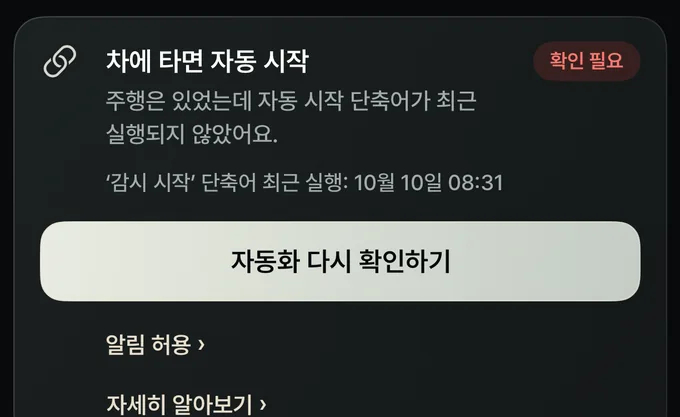
① 확인 필요 · ② 자동화 다시 확인하기RoadSentry 1.0.6 실제 화면
차에서는 이렇게 동작해요
차량 등록을 안 했을 때
차 블루투스가 연결되면 바로 감시가 켜져요. 소리 없이 켜지니, 앱을 열어 ‘감시 종료’ 버튼이 보이는지로 확인해요.
차량 등록을 했을 때
기어를 D에 넣으면 바로 “주행을 시작합니다”라고 말하며 켜져요. P를 넣으면 바로 끝나요. (설정 → 차량 연결 · 전비의 ‘차에 타면 자동 연결’과 ‘기어로 시작·종료’가 켜져 있을 때예요. 지하 주차장에서도 마찬가지예요.)
4차량 등록 (테슬라) 선택
안 해도 카메라 안내는 다 돼요. 등록하면 기어를 D에 넣으면 바로 시작하고 P에 넣으면 바로 끝나요. 전비를 계산하고, 목적지를 차로 보낼 수 있어요.
차 안이나 차 옆(10m 안)에서, 카드키를 손에 들고 시작해요. 차 안에서 하면 3분이면 끝나요.
-
홈의 차량 등록을 눌러요
등록 전이면 홈에 ‘차량을 등록해 주세요’가 보여요. ‘나중에 하기’를 눌렀다면 홈 위쪽의 작은 ‘차량 등록’ 버튼을 눌러요.
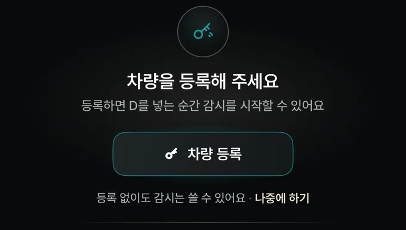
① 차량 등록RoadSentry 1.0.6 실제 화면 -
‘등록 전에 이것만 준비해 주세요’를 보고 ‘다음’
차가 잠들어 있으면 문을 한 번 열어 깨워 두세요. 더 빨리 찾아요.
-
차량 VIN 17자리를 넣고 ‘차 찾기’
차 화면 → 소프트웨어에 나와요. 앞유리 왼쪽 아래에도 적혀 있어요. 복사해 둔 VIN이 있으면 ‘붙여넣기’를 눌러요. 처음이면 ‘차 찾기’를 누를 때 블루투스 허용 창이 떠요. ‘허용’을 눌러 주세요.
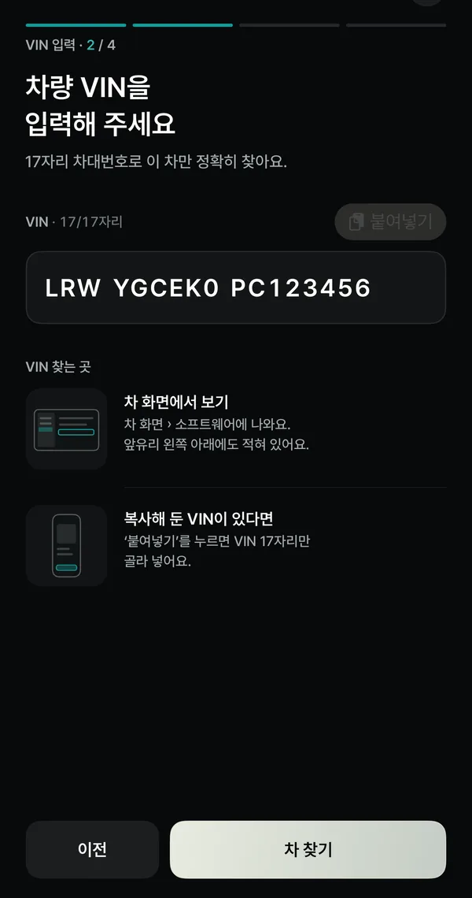
① VIN 칸 · ② 차 찾기 (그림의 VIN은 예시)RoadSentry 1.0.6 실제 화면 -
카드키를 대고 차 화면에서 ‘확인’
카드키를 대면 차 화면에 키를 추가할지 묻는 창이 떠요. ‘확인’을 눌러 주세요. 카드키 인식 위치는 차종마다 달라요. 보통 센터 콘솔의 무선 충전 패드에 있어요(모델 Y 주니퍼는 패드 왼쪽, 예전 모델 3는 컵홀더 뒤쪽). 차 화면 안내를 따르세요.
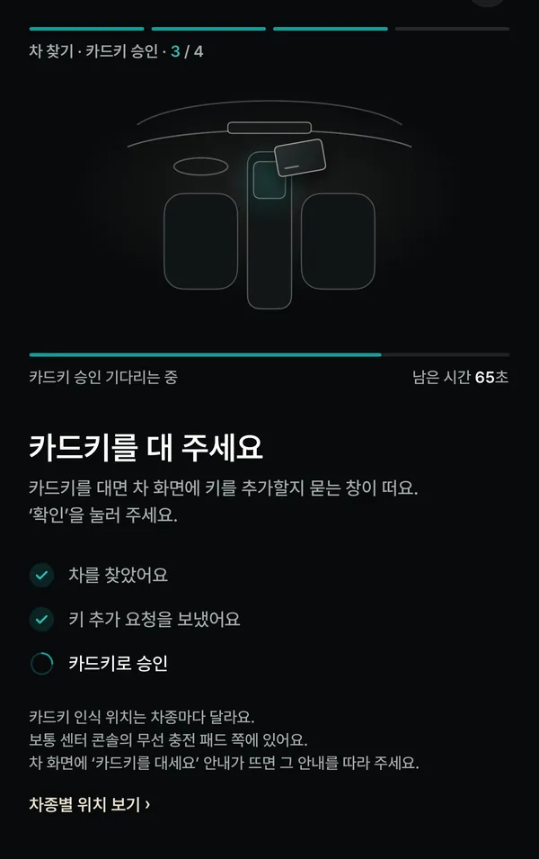
① 남은 시간RoadSentry 1.0.6 실제 화면 창을 닫아도 등록은 계속 진행돼요.
-
‘등록됐어요’가 보이면 끝
테스트로 차와 실제로 연결되는지 확인할 수 있어요. ‘다음 할 일’에서 자동 시작 안내로 바로 갈 수 있어요.
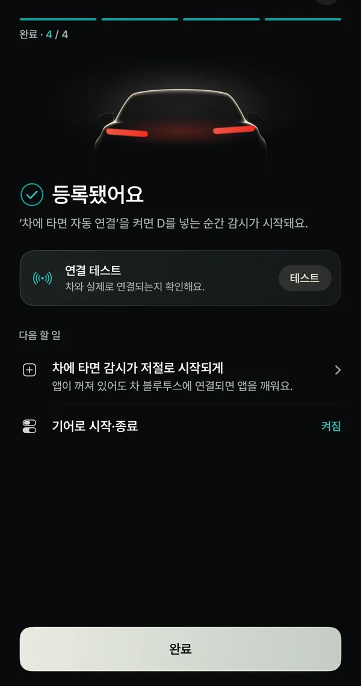
① 연결 테스트 · ② 완료RoadSentry 1.0.6 실제 화면
등록한 뒤 설정
설정 → 차량 연결 · 전비에서 바꿔요.
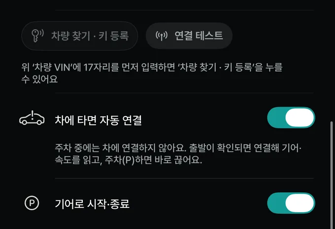
- 1등록·다시 등록 버튼 (등록 해제는 옆 휴지통)
- 2차에 타면 자동 연결 켜기 (기본 켬)
- 3기어로 시작·종료 켜기 (기본 켬). D를 넣으면 바로 시작하고, P를 넣으면 바로 끝나요
- 4연결 테스트로 잘 붙는지 확인
차량 등록으로 더 편해지는 것
기어로 바로 시작·종료: D를 넣으면 바로 감시가 켜지고(지하 주차장 포함), P를 넣으면 바로 끝나요.
3시간 안에 다시 타면 단축어 없이도 켜져요. 주차(P)하거나 오래 서 있어서 감시가 저절로 끝난 뒤 약 3시간 안에 다시 출발하면, GPS로 출발을 알아채 감시를 켜요.
하룻밤 주차처럼 오래 쉬었다 탈 때나, ‘감시 종료’ 버튼·‘감시 정지’ 단축어로 끝낸 뒤에는 이 기능이 동작하지 않아요. 그래서 ① 단축어는 꼭 만들어 두세요.
5테슬라로 목적지 보내기
Siri에게 말하거나 앱에서 고른 목적지를 테슬라 내비로 보내요. 차량 등록(4장)을 마친 분이 쓸 수 있어요.
차에 타기 전에 보냈다면
앱이 기억해 두었다가 차에 타서 D를 넣는 순간 보내요. 보낸 뒤 2시간 안에 출발하면 돼요.
달리는 중이나 신호 대기 중에 보냈다면
바로 보내요. 보낸 뒤 “차 화면에서 목적지를 눌러 주세요”라고 한 번 알려 드려요. 차 화면에 뜬 목적지를 한 번 누르면 안내가 시작돼요.
Siri로 보내기 1.0.6
앱을 열지 않아도, iPhone이 잠겨 있어도 Siri에게 말하면 돼요. 앱 이름은 ‘로드센트리’로 말해요.
즐겨찾기나 최근에 간 곳
“시리야, 로드센트리로 회사 안내해줘”
즐겨찾기 이름은 그대로 말하면 바로 보내요. Siri가 “회사, 차로 보낼게요”라고 답하면 준비가 끝난 거예요. 달리는 중이면 “회사로 보낼게요. 차 화면에서 눌러 주세요”라고 답하고 바로 보내요. 최근에 검색해서 간 곳은 다시 찾아서 맞는지 물어봐요.
처음 가는 곳은 두 번에 나눠 말해요
-
“시리야, 로드센트리로 안내해줘”
장소 이름은 아직 말하지 않아요. Siri가 “어디로 안내할까요?”라고 물어요.
-
동네와 함께 장소를 말해요
“김포 풍무동 스타벅스”
가게나 건물 이름은 동네와 함께 말하면 더 정확해요.
-
맞는지 대답해요
Siri가 찾은 곳을 “○○동 ○○, 이곳이 맞나요?”라고 물어요.
- “네”: 그곳으로 보내요.
- “아니”: “동네와 함께 다시 말해 주세요”라고 다시 물어요. 동네를 넣어 다시 말해 주세요. “아니, 여의도에 있어”처럼 한 번에 말해도 돼요.
- “취소”: 보내지 않고 끝나요.
같은 이름이 여러 곳이면 목록(최대 4곳)이 나와요. 맞는 곳을 고르고, 없으면 ‘다른 곳’을 골라 동네와 함께 다시 말해요.
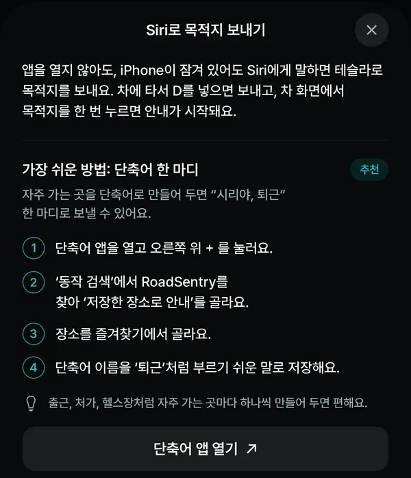
Siri 단축어 꿀팁
내가 정한 한마디로 부르기
단축어를 하나 만들어 두면 앱 이름을 말하지 않아도 돼요.
1. 자주 가는 곳을 한마디로
단축어 앱을 열고 오른쪽 위 ＋를 눌러요
‘자동화’ 탭이 아니라 ‘단축어’ 탭에서 만들어요.
‘동작 검색’에서 RoadSentry를 찾아 ‘저장한 장소로 안내’를 골라요
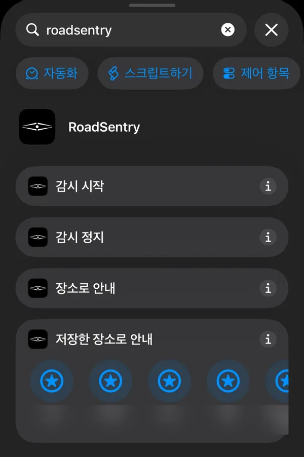
① ‘저장한 장소로 안내’(이번 단계) · ② ‘장소로 안내’(아래 2번에서 써요)iPhone 단축어 앱 실제 화면 (iOS 26) 동작 안의 ‘장소’를 눌러 즐겨찾기에서 장소를 골라요
단축어 이름을 ‘퇴근’으로 저장해요
위쪽 이름을 눌러 바꿔요. 단축어 안에서 고른 장소가 ‘우리집’이어도 괜찮아요. 아래 3번 요령은 단축어 이름에 대한 이야기예요.
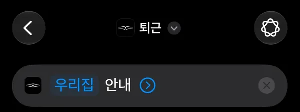
① 단축어 이름: ‘퇴근’ · 안의 동작: ‘우리집 안내’iPhone 단축어 앱 실제 화면 (iOS 26)
그다음부터는 “시리야, 퇴근” 한마디면 돼요. 출근, 헬스장처럼 자주 가는 곳마다 하나씩 만들어 두면 편해요.
2. 처음 가는 곳도 내 말로 부르기
같은 방법으로 ‘장소로 안내’ 동작을 넣고, ‘장소’는 비워 둔 채 이름을 ‘테슬라 길안내’처럼 부르기 쉬운 말로 저장해요.
“시리야, 테슬라 길안내” → “어디로 안내할까요?” → “김포 풍무동 스타벅스”
Siri가 ‘로드센트리’를 잘 못 알아들을 때 가장 확실한 방법이에요.
3. 단축어 이름 고르는 요령
- 단축어 이름으로는 ‘집’, ‘우리집’을 피해 주세요. Siri가 연락처의 집 주소로 알아들어요.
- 다른 앱 이름이나 Siri 기본 명령과 겹치지 않는 말을 골라요. 한두 낱말로 짧게 지으면 잘 알아들어요. 예: ‘퇴근’, ‘테슬라 길안내’
잘 안 될 때
- 즐겨찾기 이름이 ‘집’, ‘우리집’이거나 연락처에 있는 이름과 같으면 Siri가 연락처를 먼저 찾아요. 즐겨찾기 이름을 아파트 이름처럼 바꾸거나 Siri 단축어 꿀팁대로 단축어를 써 주세요.
- 잠겨 있을 때 안 되면 iPhone 설정 앱 → Siri에서 ‘잠겨 있는 동안 Siri 허용’을 켜 주세요.
- 말하는 도중에 Siri가 끊으면 설정 앱 → 손쉬운 사용 → Siri에서 ‘Siri 일시 정지 시간’을 ‘늘리기’로 바꿔 주세요.
- Siri가 알아들은 말을 보려면 설정 앱 → Siri → Siri 응답에서 ‘요청 내용 항상 표시’를 켜 주세요.
- 차를 먼저 등록해야 보낼 수 있어요. 등록 전이면 Siri가 “앱에서 차를 먼저 등록해 주세요”라고 답해요.
앱 안에도 같은 설명이 있어요. RoadSentry → 설정 → 도움말 → Siri로 목적지 보내기
[차로 보내기] 버튼 1.0.6
목적지 검색 결과, 즐겨찾기, 최근 목적지 줄 오른쪽의 차로 보내기를 누르면 돼요. 예전처럼 공유 창에서 Tesla 앱을 고를 필요가 없어요.
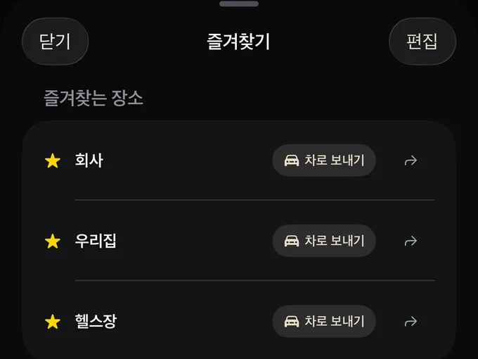
- 차에 타기 전에 누르면 버튼이 ‘예약됨’으로 바뀌고 ‘D 넣을 때 차로 보낼게요’가 보여요.
- 보낸 뒤 차 화면에서 목적지를 누르면 ‘차 목적지를 바꿨어요’가 보여요. 1분 안에 바뀌지 않으면 ‘목적지는 그대로예요’와 함께 버튼이 다시 보내기로 바뀌어요.
- 운전 중에는 동승자가 누르거나, 신호 대기로 멈췄을 때 눌러 주세요.
- 보내지 못했을 때는 테슬라 앱으로 보내기가 보여요. 누르고 공유 창에서 Tesla를 고르면 돼요.
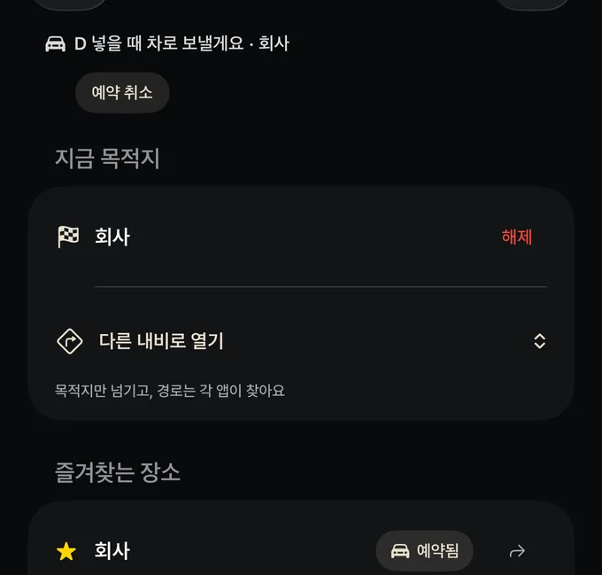
[예약 취소]
차에 타기 전에 보낸 예약은 상태 줄 아래 예약 취소로 지울 수 있어요. 그 예약으로 정한 앱 목적지도 함께 지워지고 ‘차로 보내기 예약과 목적지를 지웠어요’가 보여요. 그사이 다른 목적지로 바꿨다면 예약만 지워요.
6충전·통행료·기록
충전 요금과 통행료를 주행 기록에 함께 모아 보여 드려요. 계산은 모두 이 iPhone 안에서 해요.
자주 충전하는 곳 (최대 3곳) 1.0.6
설정 → 차량 연결 · 전비 → 충전 요금 → 자주 충전하는 곳에서 정해요. 회사, 아파트 충전기처럼 자주 가는 곳을 3곳까지 넣을 수 있어요.
-
‘충전 장소 추가’를 눌러요
오른쪽의 0/3은 지금까지 정한 곳의 수예요.
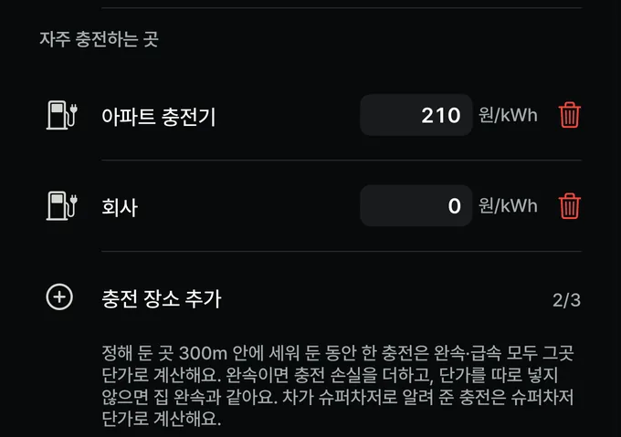
① 충전 장소 추가RoadSentry 1.0.6 실제 화면 -
‘즐겨찾기에서 고르기’ 또는 ‘지도에서 핀으로 정하기’
지도에서 정할 때는 지도를 움직여 핀 끝을 충전하는 자리에 맞추고, 이름을 넣은 뒤 이 위치로 정하기를 눌러요. 이름과 위치는 이 기기에만 저장돼요.
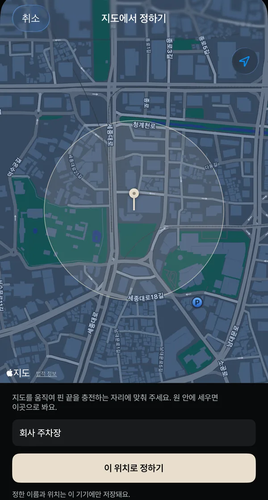
① 이름 · ② 이 위치로 정하기RoadSentry 1.0.6 실제 화면 -
단가를 넣어요 (선택)
곳마다 원/kWh 단가를 넣을 수 있어요. 비워 두면 집 완속 단가로 계산해요. 0을 넣으면 무료로 계산해요.
- 정해 둔 곳 300m 안에 세워 둔 동안 한 충전은 완속·급속 모두 그곳 단가로 계산해요. 차가 슈퍼차저로 알려 준 충전은 슈퍼차저 단가로 계산해요.
- 잘못 나뉘었으면 충전 기록에서 변경을 눌러 종류를 직접 바꿀 수 있어요.
- 지우려면 그 줄의 휴지통을 누르고 지우기를 눌러요. 이곳 단가로 계산한 지난 충전은 충전기 종류 단가로 다시 계산돼요.
- 위치서비스 이용약관 1.9에 동의해야 자동으로 나눠요. 동의하지 않아도 충전 기록에서 곳을 직접 고를 수는 있어요.
예상 통행료 1.0.6
주행이 끝나면 주행 카드에 지나온 유료도로의 예상 통행료가 한 줄로 보여요.
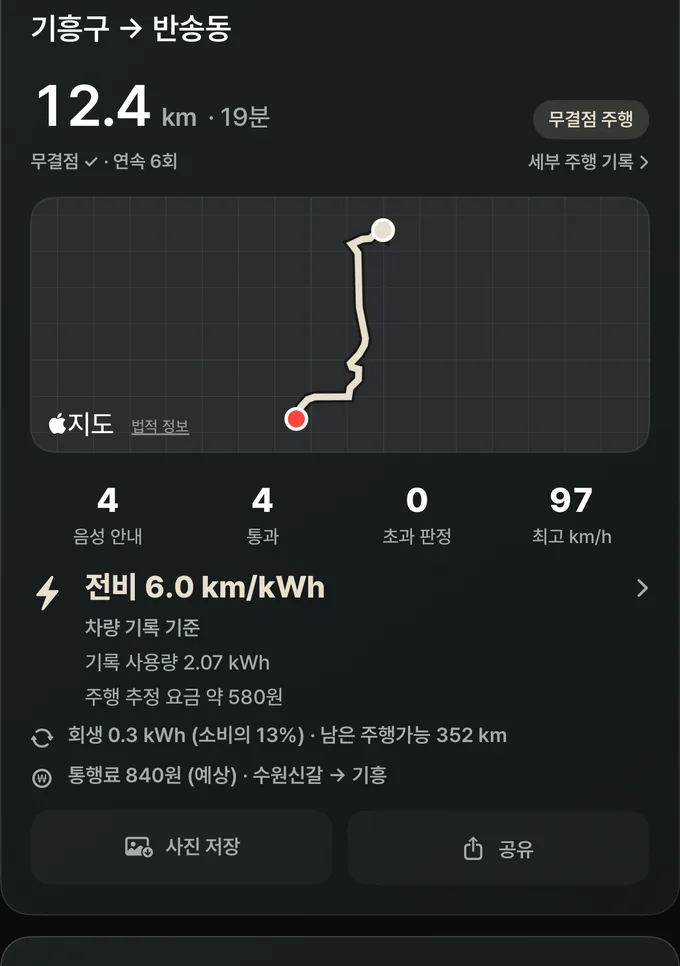
- 요금은 2026년 10월 기준이고, 일반 승용차 요금으로 계산해요.
- 설·추석 연휴 면제는 저절로 반영해요. 출퇴근 할인은 반영하지 않아요.
- 일부 구간을 확인하지 못하면 ‘확인 필요’, 요금 자료가 없는 도로는 ‘요금 정보 없음’으로 보여요.
- 카드 위쪽 세부 주행 기록 ›을 누르면 요금소를 지난 시각이 ‘요금소 통과’ 줄로 함께 보여요.
통행료 감면 설정
설정 → 차량 연결 · 전비 → 통행료에서 내 상황에 맞게 골라요.
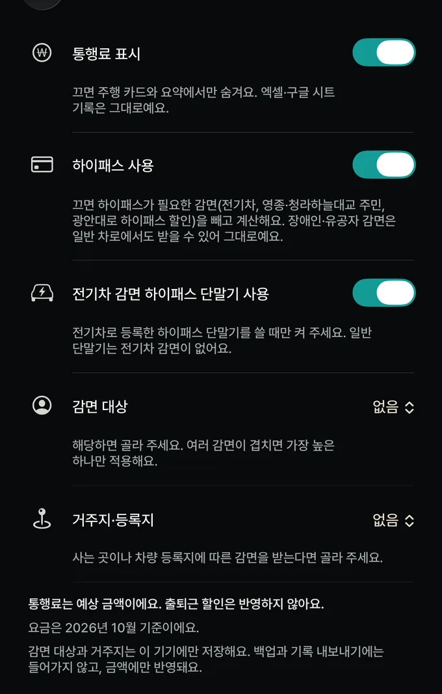
- 1통행료 표시: 끄면 주행 카드와 요약에서만 숨겨요. 엑셀·구글 시트 기록은 그대로예요.
- 2하이패스 사용: 끄면 하이패스가 있어야 받는 감면을 빼고 계산해요.
- 3전기차 감면 하이패스 단말기 사용: 전기차로 등록한 단말기를 쓸 때만 켜 주세요.
- 4감면 대상: 장애인, 국가유공자 등, 고엽제 중에서 골라요. 여러 감면이 겹치면 가장 높은 하나만 적용해요.
- 5거주지·등록지: 영종·용유·북도, 인천시민, 부산·광주·전남·대구 등록 전기차 중에서 골라요.
감면 대상과 거주지는 이 기기에만 저장해요. 백업과 기록 내보내기에는 들어가지 않고 금액에만 반영돼요. 통행료는 예상 금액이라 실제 청구 금액과 다를 수 있어요.
기록 탭: 달력 · 주간 · 월간 1.0.6
기록 탭 위에서 달력 주간 월간을 골라요. 예전의 ‘목록’ 칸은 없어지고 달력으로 열려요.
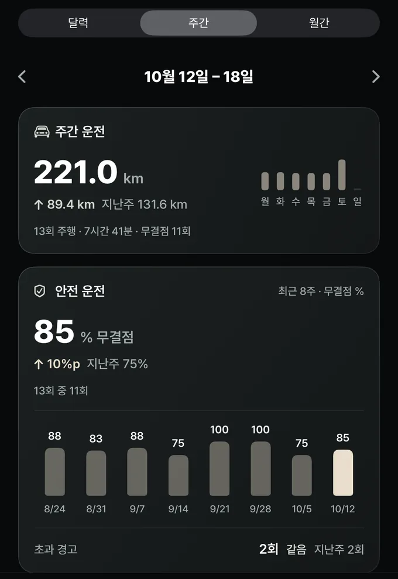
- 달력: 날짜를 누르면 그날 주행 카드가 보여요.
- 주간: 주간 운전, 안전 운전, 자주 다닌 길, 이동 비용(충전 요금과 예상 통행료), 평균 전비를 지난주와 비교해 보여 줘요. 주가 끝나지 않았으면 지난주 같은 요일까지와 비교해요.
- 월간: 이달의 운전, 평균 전비, 주별 주행 거리, 이동 비용, 가장 많이 간 곳을 한 장으로 보여 줘요. 사진 저장 · 공유도 돼요. 공유 이미지에는 장소 이름이 들어가지 않아요.
주간 요약 알림 1.0.6
매주 월요일 아침에 ‘지난주 운전 요약이 나왔어요’ 알림이 와요. 누르면 기록 탭 주간 칸이 바로 열려요. 지난주에 주행이 없으면 보내지 않아요.
설정 → 알림 → ‘주간 요약 알림’에서 끌 수 있어요(기본 켬, 알림을 허용한 경우에만).
엑셀·구글 시트에 예상 통행료 열 1.0.6
- 주행 시트에 ‘예상 통행료(원)’ 열이 더해졌어요. ‘기록 번호’ 바로 앞이에요. 확인하지 못한 주행은 ‘확인 필요’처럼 글로 적혀요.
- 충전 시트의 ‘종류’ 칸에서 ‘미확인’이 ‘종류 모름’으로 바뀌었어요.
- 구글 시트 맨 위에 ‘RoadSentry 주행 기록 · 마지막 저장 …’ 제목 줄이 생겼어요. 휴대폰으로 시트를 열어도 항목 이름 줄이 가려지지 않아요. 엑셀 파일은 그대로예요.
7그 밖의 기능
1.0.6에서 바뀐 것부터 적었어요. 따로 켜지 않아도 되는 건 업데이트만 하면 바로 써요.
업데이트 뒤 처음 한 번: 약관 1.9 동의 1.0.6
1.0.5 이하에서 업데이트하면 앱을 열 때 ‘위치서비스 이용약관이 바뀌었어요’ 화면이 한 번 떠요. 두 칸을 체크하고 동의하고 계속을 누르면 돼요.
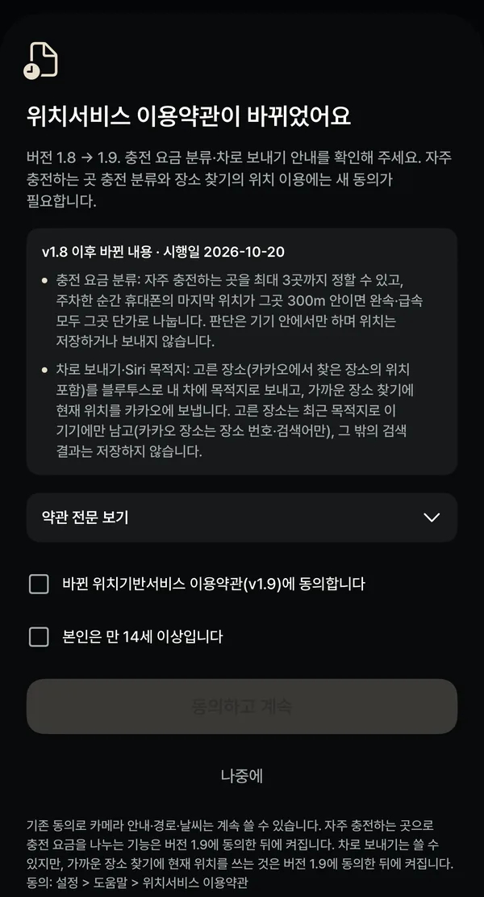
- 바뀐 내용은 자주 충전하는 곳으로 충전 요금을 나누는 기능이에요. 판단은 기기 안에서만 하고, 위치는 저장하거나 보내지 않아요.
- 나중에를 눌러도 카메라 안내·경로·날씨는 그대로 쓸 수 있어요. 자주 충전하는 곳으로 나누는 기능만 동의한 뒤에 켜져요.
- 나중에 동의하려면 설정 → 도움말 → 위치서비스 이용약관에서 해요.
잠금화면 새 디자인 1.0.6
감시 중 잠금화면 카드의 바탕을 메인 화면과 같은 짙은 회색으로 바꿨어요. 속도 숫자와 제한속도 표지판, 아래 안내 글이 더 또렷하게 보여요. 과속할 때 붉게 알려 드리는 것은 그대로예요.
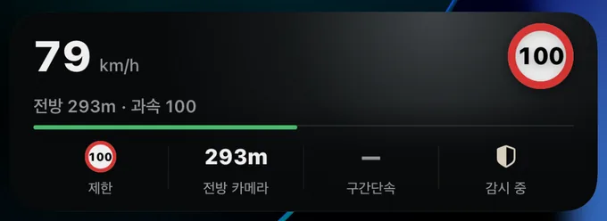
- 위: 지금 속도와 제한속도, 한 줄 안내
- 아래 네 칸: 제한 · 전방 카메라 · 구간단속(구간 안에서는 구간 평균) · 기어와 배터리(차량 등록을 안 했다면 감시 상태)
- 카메라가 600m 안으로 가까워지면 남은 거리가 막대로 보여요. 과속 중이면 빨간색이에요.
- ‘업데이트 지연 · 앱에서 확인’이 보이면 앱을 한 번 열어 주세요.
안내 음성에서 바뀐 것 1.0.6
- 구간단속 안내를 “구간단속, 제한속도 80입니다”, “제한속도 변경, 제한속도 60입니다”처럼 바꿨어요. 화면 글자는 그대로예요.
- 안내 소리가 iPhone 음량을 그대로 따라요. 제어 센터나 iPhone 옆 버튼으로 음량을 올리면 안내도 커져요. 설정 → 소리 → ‘안내 음량’은 그 안에서 RoadSentry 안내만 더 크게, 작게 맞춰요.
- 차 블루투스로 들을 때 최대 음량(기본 켬): CarPlay나 차 블루투스로 들을 때는 ‘안내 음량’과 관계없이 가장 크게 들려요.
- 차 스피커 음량이 작거나 꺼져 있으면 주행 화면에 ‘차 스피커 음량이 작아요’가 떠요. 운전대 스크롤 휠이나 iPhone 옆 버튼으로 올려 주세요.
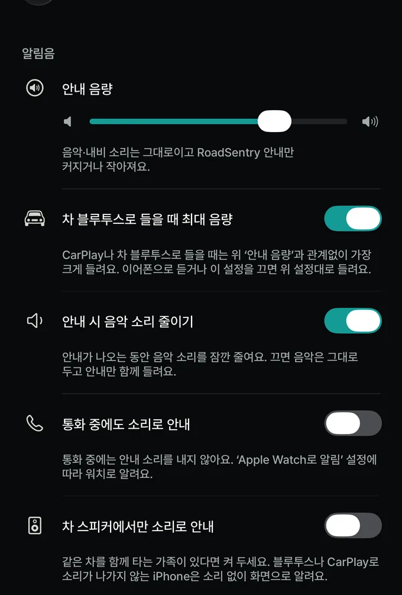
통화 중 안내
기본으로는 통화 중에 안내 소리를 내지 않아요. ‘Apple Watch로 알림’ 설정에 따라 워치로 알려요.
- 설정 → 소리 → ‘통화 중에도 소리로 안내’(기본 끔)를 켜면 통화 중에도 카메라, 구간단속, 과속 안내만 소리로 알려요. 통화 소리는 줄이지 않아요. 기기에 따라 작게 들리거나 들리지 않을 수 있어요.
- 이 설정을 켰을 때 iPhone으로 통화하면(수화기·스피커폰) 상대에게 방해되지 않게 소리 대신 화면과 진동으로 알려요.
- 설정 → 소리 → ‘차 스피커에서만 소리로 안내’(기본 끔): 두 사람이 같은 차를 타면 차 블루투스에 연결된 폰만 소리로 안내하고, 다른 폰은 화면과 워치로만 알려요. 함께 타는 분 모두 켜 두면 안내가 겹치지 않아요.
사용방법 소개 6장 1.0.6
설정 → 도움말 → 사용방법 소개에서 앱 사용법을 6장으로 넘겨 볼 수 있어요. 장마다 그 설정으로 바로 가는 버튼이 있어요.
- 1감시: 감시 시작 한 번이면 돼요
- 2기어로 시작: 차량 등록하기
- 3자동 시작: 1분 설정 안내 시작
- 4안내 소리: 소리 설정 열기
- 5기록·요약: 기록 보기
- 6그 밖에: 필요할 때 쓰는 기능
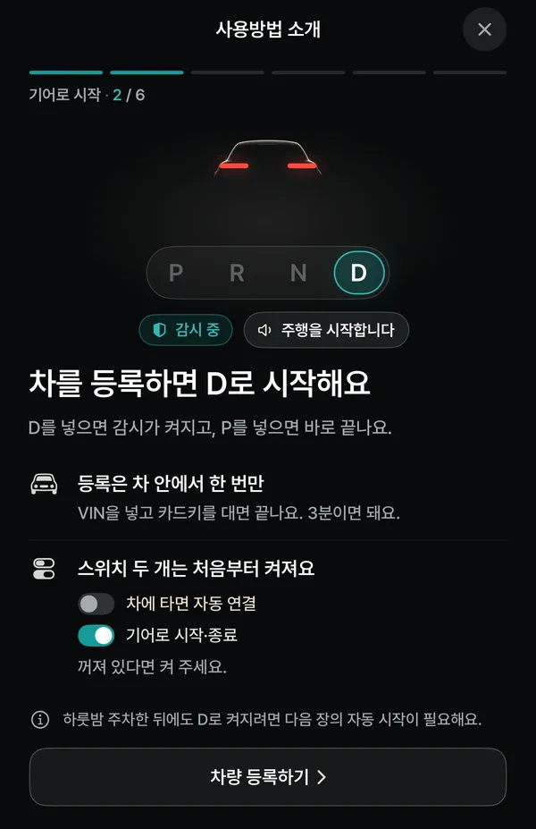
가로 계기판 1.0.5
감시 중에 폰을 가로로 돌리면 속도, 제한속도, 카메라까지 남은 거리를 큰 화면으로 보여 드려요. 주행 탭의 계기판 모드를 눌러도 열려요.
- 1.0.6부터 속도 숫자가 차 계기판을 더 빠르게 따라가요. 설정 → 알림 → ‘계기판 속도’에서 자동 (권장), 차량, GPS 중에 고를 수 있어요.
- 1.0.6부터 왼쪽 위에 목적지와 남은 거리를 작게 보여 드려요.
- 닫기는 ✕를 누르거나 폰을 다시 세로로 돌리면 돼요. P를 넣어 감시가 끝나도 닫혀요.
- 설정 → 알림 → ‘가로로 돌리면 계기판 모드’를 끄면 저절로 바뀌지 않아요. ‘계기판 배경 움직임’을 끄면 배경이 멈춰 배터리를 아껴요.
도착하면 목적지를 정리해요 1.0.6
목적지 500m 안에서 주차(P)하면 앱 목적지를 바로 지워요. 3km 안이면 30분 넘게 머문 뒤 다시 출발할 때 지워요. 그보다 멀리 세웠다면(중간 충전 등) 그대로 둬요.
시내 첫 안내 거리 1.0.5
설정 → 알림 → 시내 첫 안내 거리에서 550m(기본) · 300m · 200m 중에 골라요.
- 시속 60km보다 느릴 때 소리 안내만 고른 거리까지 늦춰요. 화면 카드는 지금처럼 먼저 떠요.
- 제한속도를 넘고 있거나 더 빠를 때, 구간단속·보호구역에서는 바로 알려요.
기록 내보내기 (엑셀) 1.0.5
기록 탭 왼쪽 위 공유 아이콘을 누르거나, 설정 → 기록 내보내기로 열어요.
엑셀로 내보내기를 누르면 주행 시트와 충전 시트가 든 엑셀 파일을 만들어 공유 창을 띄워요. 파일 앱에 저장하거나 메일·메신저로 보낼 수 있어요. 좌표와 경로는 들어가지 않아요.
구글 시트 자동 저장 1.0.5 · 선택
같은 ‘기록 내보내기’ 화면에서 구글로 연결을 누르고 구글 계정으로 로그인해 허용하면 켜져요.
- 주행이 끝나거나 충전이 기록될 때마다 내 구글 드라이브의 ‘RoadSentry 주행 기록’ 시트에 저장해요. 알림이나 소리 없이 조용히 저장해요.
- 엑셀 파일과 같은 내용이에요. 좌표와 경로는 넣지 않고, 출발과 도착 칸에는 카드에 보이는 이름(주로 동네 이름)만 들어가요.
- 저장할 때마다 시트를 앱 기록으로 새로 채워요. 시트에서 고치거나 더한 내용은 다음 저장 때 지워져요. 따로 쓰려면 사본을 만들어 쓰세요.
- 기록은 내 구글 드라이브로 바로 가요. RoadSentry 개발자 서버를 거치지 않아요.
- 시트 열기로 바로 볼 수 있고, 연결 끊기를 누르면 자동 저장이 멈춰요. 드라이브에 있는 시트는 지우지 않아요.
새 버전 알림 1.0.5
App Store에 새 버전이 나오면 앱을 열 때 한 번 알려 드려요. 나중에를 누르면 그 버전은 다시 묻지 않아요.
월간 리포트 1.0.4
매달 1일, 지난달 운전을 한 장으로 정리해 드려요. 기록 탭 달력 위 ‘N월 운전 리포트가 나왔어요’ 배너를 누르거나 월간을 누르면 열려요.
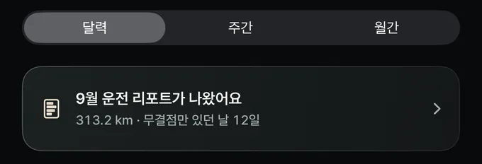
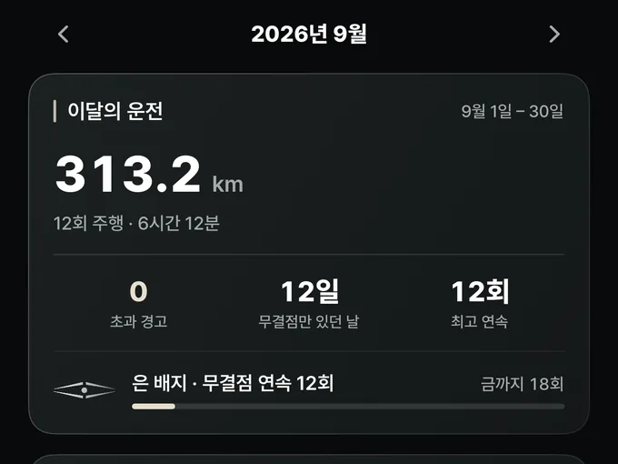
매달 1일 아침 알림은 설정 → 알림 → ‘월간 리포트 알림’에서 끄고 켤 수 있어요(기본 켬, 알림을 허용한 경우에만).
에코 코칭 1.0.4
주행마다 평소보다 전기를 더 썼는지, 덜 썼는지 한 줄로 알려 드려요. 차량 등록을 하고 달린 주행에서 보여요.
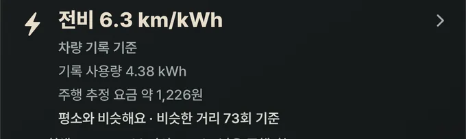
전비 줄을 누르면 왜 그랬는지 보여 드려요.
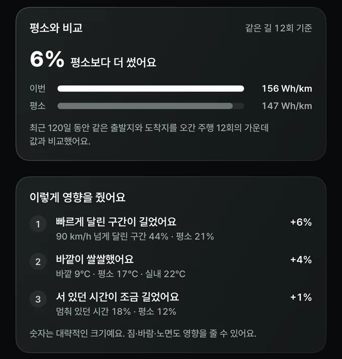
설정 → 알림의 알림 항목
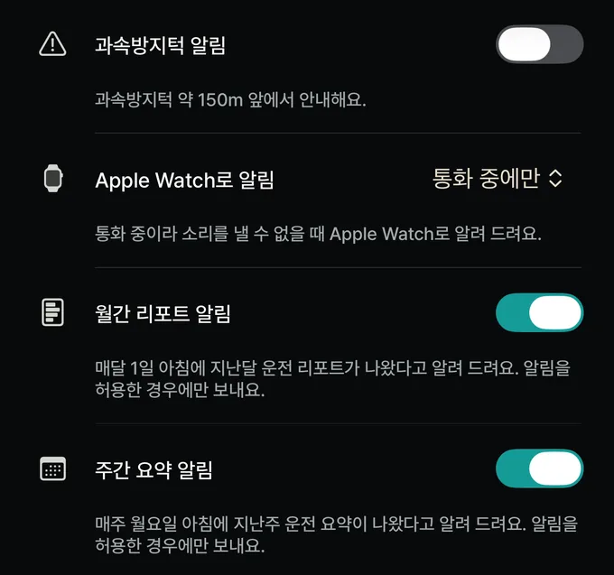
- 1과속방지턱 알림: 켜면 과속방지턱 약 150m 앞에서 알려 드려요. 기본은 꺼져 있어요.
- 2Apple Watch로 알림: 끔 / 통화 중에만(기본) / 항상 중에서 골라요.
- 3월간 리포트 알림: 매달 1일 아침에 알려 드려요.
- 4주간 요약 알림: 매주 월요일 아침에 알려 드려요.
Apple Watch 알림 1.0.4
- 통화 중에만: 통화 중이라 소리를 낼 수 없을 때 워치로 알려 드려요.
- 항상: 카메라에 다가갈 때와 과속할 때마다 워치로도 알려 드려요.
- 워치에 앱을 따로 설치하지 않아도 돼요.
- 워치의 스마트 스택에서 실시간 현황이 켜져 있어야 해요. (iPhone ‘Watch’ 앱 → 스마트 스택 → 실시간 현황)
안내 시 음악 소리 줄이기 1.0.4
RoadSentry → 설정 → 소리 → 안내 시 음악 소리 줄이기 (기본 켬)
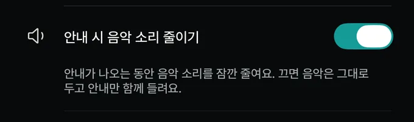
안내가 나오는 동안 음악 소리를 잠깐 줄여요. 끄면 음악은 그대로 두고 안내만 함께 들려요.
앱 안에서 이 설명서 보기
RoadSentry → 설정 → 도움말 → 맨 위 사용 설명서 보기
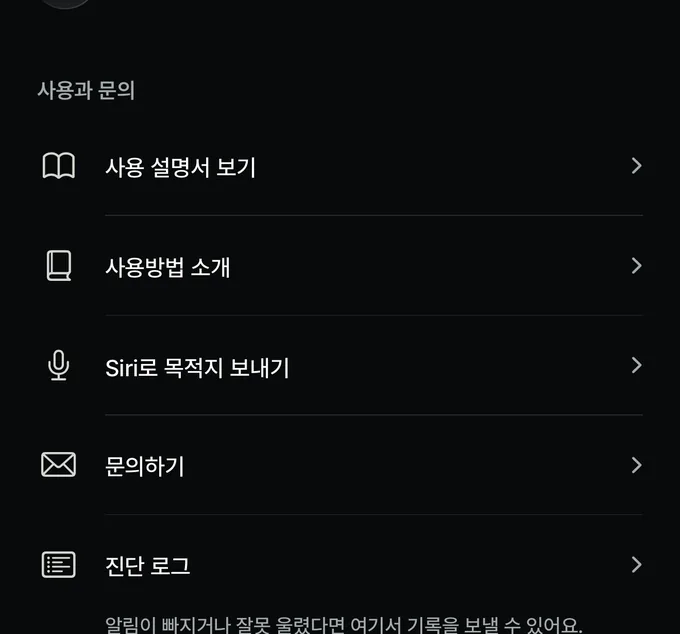
8자주 묻는 질문
눌러서 펼쳐 보세요.
공유받은 단축어 링크를 추가했는데 자동으로 안 켜져요
링크로는 단축어(무엇을 할지)만 받아져요. 차에 탈 때 실행되게 하는 자동화(언제 실행할지)는 공유가 안 돼요. 애플이 보안 때문에 막아 두었어요.
단축어
무엇을 할지
예) RoadSentry ‘감시 시작’
링크로 공유돼요
자동화
언제 실행할지
예) 내 차 블루투스에 연결될 때
공유가 안 돼요
자동으로 켜지려면 ‘언제’(자동화)가 꼭 있어야 해요. 그래서 이 iPhone에서 직접 만들어야 해요.
그래서 2. 자동 시작 설정대로 이 iPhone에서 자동화를 직접 만들어 주세요. 공유받은 단축어는 지워도 돼요.
자동화를 만들었는데도 안 된다면 이 두 가지를 확인해요.
- 자동화의 Bluetooth 기기가 내 차 이름이 맞나요? (공유받은 것 안에 다른 사람 차 이름이 들어 있을 수 있어요)
- ‘실행 전에 확인’이 꺼져 있나요? 켜져 있으면 운전 중엔 실행되지 않아요. (‘자동화’ 탭에서 만들었다면 즉시 실행인지 봐요.)
자동화를 꼭 세 개 다 만들어야 하나요?
아니요. ① 차에 연결될 때 → 감시 시작 하나만 있으면 자동으로 켜져요.
- ② 감시 정지는 권장이에요. 내릴 때 바로 끝내 줘요. 차량 등록을 했다면 P에서 끝나니 없어도 되고, 안 했다면 없을 때 차를 세운 뒤 약 5분 지나야 끝나요.
- ③ 폰 스피커로 듣기는 선택이에요. ③을 만들면 ②도 꼭 만들어요.
RoadSentry 단축어는 어디서 받나요?
따로 받을 필요가 없어요. 앱을 설치하면 단축어 앱에서 ‘RoadSentry’를 찾았을 때 ‘감시 시작’, ‘감시 정지’ 같은 동작이 이미 나와요.
자동화를 만들 때 이걸 직접 고르는 게 가장 확실해요.
단축어가 실행됐는데 앱 화면이 안 열려요
정상이에요. 단축어는 앱을 열지 않고 뒤에서 감시를 켜요. 앱을 열면 ‘감시 종료’ 버튼이 보여요. 차량 등록을 했다면 기어를 D에 넣을 때 “주행을 시작합니다”라고 알려요.
차에 탔는데 자동으로 안 켜져요
하나씩 확인해 보세요.
- 만든 자동화가 모두 ‘실행 전에 확인’ 꺼짐(‘자동화’ 탭에서 만들었다면 즉시 실행)인가요?
- 자동화의 기기가 내 차인가요? (이어폰 등 다른 기기를 고르지 않았나요?)
- 폰이 이미 차에 연결된 채였나요? 계속 연결돼 있으면 ‘새로 연결됨’이 없어서 자동화가 실행되지 않아요. 차에서 내렸다 다시 타거나, 블루투스를 껐다 켜 보세요.
- 위치 권한이 ‘항상’인가요? (1. 처음 시작하기)
- RoadSentry 설정 → 알림 → 맨 아래 ‘차에 타면 자동 시작’ 카드의 최근 실행 시각이 바뀌었나요? (3. 확인)
‘단축어 앱 열기’를 눌렀는데 자동화 만드는 화면이 안 나와요
애플이 다른 앱에서 자동화 만들기 화면으로 바로 보내는 방법을 열어 두지 않았어요. 다른 화면이 열리면 아래 ‘자동화’ 탭에서 ‘새로운 자동화’를 눌러 주세요.
단축어 없이도 켜지나요?
- 앱을 열면 켜져요. ‘앱 열면 자동 시작’이 기본으로 켜져 있어요. (설정 → 알림)
- 차량 등록을 했다면 주차 중에 앱을 열었을 때 바로 켜지지 않고 ‘D를 넣으면 자동으로 시작돼요’가 보여요. 그대로 D를 넣고 출발하면 켜져요.
- ‘감시 시작’ 버튼을 직접 눌러도 돼요.
- 차량 등록을 했다면 주차(P)나 정차로 감시가 끝난 뒤 약 3시간 안에 다시 출발할 때 GPS로 알아채 켜져요.
하룻밤 주차처럼 오래 쉬었다 탈 때는 단축어 자동화가 있어야 저절로 켜져요.
주행하지 않을 때도 배터리를 쓰는 것 같아요
차량 등록을 하셨다면, 주차 중에 앱을 열 때 바로 출발하실 수 있도록 위치를 확인하며 출발을 기다려요.
차량 등록을 하지 않으셨다면 앱을 열면 바로 감시를 시작하고, 5분 안에 출발하지 않거나 주행 뒤 차를 약 5분 세워 두면 스스로 멈춰요(차 블루투스가 연결된 채 차 안에 있으면 최대 30분).
- 차 블루투스에 연결되면 ‘감시 시작’이 실행되는 자동화를 쓰고 계시면: 앱을 연 뒤 15분 안에 출발하지 않으면 위치 확인을 멈춰요. 걸어서 이동하는 중이거나 앱 화면을 켜 두면 계속 기다리고, 길어도 3시간이 지나면 멈춰요.
- 이 자동화가 없으면: 앱을 연 뒤 최대 3시간까지 출발을 기다려요. 자동화를 만들어 두시면 배터리를 아낄 수 있어요(설정 › 알림 › 자동 시작).
- 위치 확인을 멈춘 뒤에도 차에 타면 자동화가 감시를 켜 드려요.
Siri가 엉뚱한 곳을 물어봐요
“이곳이 맞나요?”에 “아니”라고 대답하면 Siri가 “동네와 함께 다시 말해 주세요”라고 다시 물어요. 이때 “김포 풍무동 스타벅스”처럼 동네를 넣어 말해 주세요. “아니, 여의도에 있어”처럼 한 번에 말해도 돼요.
- 같은 이름이 여러 곳이면 목록이 나와요. 맞는 곳이 없으면 ‘다른 곳’을 골라요.
- 자주 가는 곳은 앱에서 즐겨찾기에 저장해 두면 이름만 말해도 바로 보내요.
- Siri가 알아들은 말을 보려면 설정 앱 → Siri → Siri 응답에서 ‘요청 내용 항상 표시’를 켜 주세요. 말이 다르게 들렸는지 확인할 수 있어요.
Siri가 ‘웹에서 찾은 결과’를 보여 줘요
Siri가 RoadSentry에 맡기지 않고 직접 찾은 경우예요. 이렇게 해 보세요.
- 처음 가는 곳은 두 번에 나눠 말해요. “시리야, 로드센트리로 안내해줘”라고 먼저 말하고, “어디로 안내할까요?”라고 물으면 장소를 말해요. 장소 이름까지 한 번에 말하면 Siri가 웹에서 찾을 때가 많아요.
- 앱 이름을 ‘로드센트리’로 또박또박 말해요.
- 그래도 안 되면 Siri 단축어 꿀팁대로 내 말을 정해 두세요. “시리야, 퇴근”, “시리야, 테슬라 길안내”처럼 내가 정한 말은 가장 확실하게 알아들어요.
- 말하는 도중에 Siri가 끊으면 설정 앱 → 손쉬운 사용 → Siri에서 ‘Siri 일시 정지 시간’을 ‘늘리기’로 바꿔 주세요.
목적지를 보냈는데 차에서 안내가 시작되지 않아요
보낸 목적지는 차 화면에 뜨고, 차 화면에서 목적지를 한 번 눌러야 안내가 시작돼요.
- 차에 타기 전에 보냈다면 D를 넣는 순간 보내요. 보낸 뒤 2시간이 지나면 예약이 취소돼요.
- 차량 등록을 해야 보낼 수 있어요. ‘차에 타면 자동 연결’도 켜 두세요.
- 차 화면에 충전 경유가 있으면 지워질 수 있어서, 앱이 그래도 보낼지 먼저 물어봐요.
- 보내지 못했다면 테슬라 앱으로 보내기를 눌러 공유 창에서 Tesla를 골라요.
지하 주차장에서 나갈 때 늦게 켜져요
차량 등록을 했다면 1.0.5부터는 지하에서도 기어를 D로 넣으면 바로 켜져요(‘차에 타면 자동 연결’과 ‘기어로 시작·종료’를 켠 경우). 차에 탄 뒤 10분 넘게 머물다 D를 넣었다면, 밖으로 나와 GPS가 잡힌 뒤에 켜질 수 있어요.
차량 등록을 안 했다면 지하에서는 GPS가 잡히지 않아요. 밖으로 나와 GPS가 잡힌 뒤에 출발을 확인해서 조금 늦을 수 있어요. 잠시 기다리면 켜져요.
테슬라 폰 키랑 같이 써도 안전한가요?
- RoadSentry는 문을 열거나 잠그는 기능이 없어요.
- 주차 중에는 차에 탄 뒤 한 번에 최대 10분 동안 차가 알려 주는 기어 값만 읽고, 차에 명령을 보내지 않아요. 주차(P)하면 바로 끊어요.
- 목적지를 차로 보내는 것은 D를 넣은 뒤에만 해요. 주차 중에 Siri로 말하거나 [차로 보내기]를 누르면 앱이 기억만 해 두고, 그때는 차에 아무것도 보내지 않아요.
- 1.0.4와 1.0.5에서 테슬라 폰 키와 함께 쓸 때 더 안정적으로 동작하도록 개선했어요.
- 차 키 목록에 RoadSentry 키가 하나 보여요. 폰을 바꿀 때는 차 화면 ‘잠금’ 메뉴의 키 목록에서 지워 주세요.
안내 소리가 작아요 / 음악 소리가 줄어요
- 안내 소리는 iPhone 음량을 따라요. 제어 센터나 iPhone 옆 버튼으로 음량을 올려 주세요. 차 블루투스로 듣는다면 차 음량도 확인해 주세요.
- 설정 → 소리 → ‘안내 음량’으로 RoadSentry 안내만 더 크게 할 수 있어요.
- 설정 → 소리 → ‘안내 시 음악 소리 줄이기’(기본 켬)를 켜 두면 안내가 나오는 동안 음악 소리를 잠깐 줄이고, 끄면 음악은 그대로 두고 안내만 함께 들려요.
새 iPhone으로 바꿨어요
- 새 iPhone에서 자동화가 그대로 있는지 단축어 앱 → 자동화 탭에서 확인하고, 없으면 2. 자동 시작 설정대로 다시 만들어요.
- 차량 등록을 했다면 차 화면 키 목록에서 예전 RoadSentry 키를 지우고, 새 iPhone에서 차량을 다시 등록해요.
- Siri용으로 만든 단축어(‘퇴근’ 등)도 새 iPhone에 있는지 확인해 주세요.
안내가 실제와 달라요 / 카메라를 놓쳤어요
위치·통신·제공 정보에 따라 안내가 늦거나 빠질 수 있어요. 실제 도로 표지와 제한속도를 먼저 봐 주세요. 차를 세운 뒤 진단 로그를 보내 주시면 원인을 찾는 데 큰 도움이 돼요.
9문의하기
문제가 생기면 진단 로그를 먼저 보내고, 받은 접수번호를 함께 알려 주세요.
-
설정 → 도움말 → 진단 로그
① 진단 로그RoadSentry 1.0.6 실제 화면 -
‘진단 기록 보내기’를 눌러요
정확한 위치(좌표·진행 방향)는 지운 뒤 보내요. 목적지 이름도 빠져요.
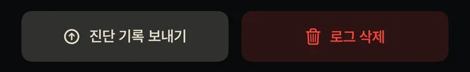
RoadSentry 1.0.4 실제 화면 -
접수번호와 상황을 알려 주세요
언제, 어디쯤(대략), 무엇이 이상했는지 적어 주시면 돼요.